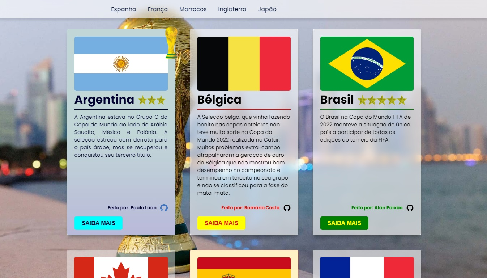
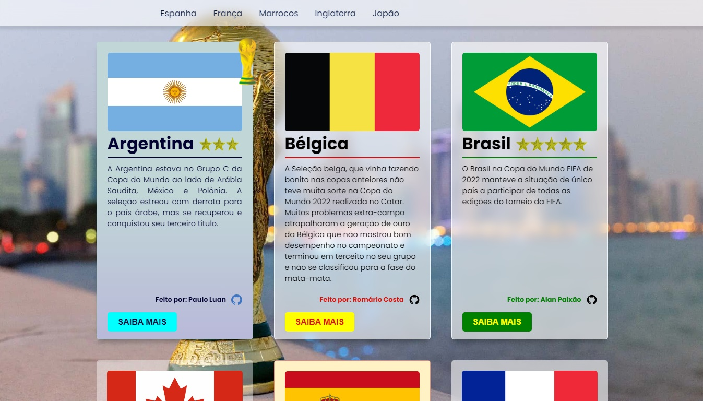

Sobre Mim
Sobre Mim
Tenho 28 anos e resido em Fortaleza, no Ceará. Sou aluno do 4º semestre de Bacharelado em Sistemas de Informação pela UniFanor - Wyden e da formação como Desenvolvedor Full Stack pela Digital College. Apaixonado por criar experiências interativas e envolventes para usuários como desenvolvedor front-end.
Com habilidades em HTML, CSS e JavaScript, tenho uma paixão por transformar designs complexos em páginas web funcionais e acessíveis. Sempre busco aprimorar minhas habilidades e estou atualmente explorando novas tecnologias, Bootstrap, Tailwind CSS, React, dentre outras.
Possuo formação em Gastronomia pela UniFanor - Wyden e pós-graduação em Gestão e Negócios pela Faculdade das Americas (FAM). Por 2 anos, fui estudante de Bacharelado em Engenharia da Computação no Instituto Federal do Ceará (IFCE) em meados de 2011, onde fui admitido na primeira tentativa.
Em transição profissional para trabalhar com o que amo, buscando aprimorar minhas habilidades e conhecer novas tecnologias no mercado. Se procura por um profissional apaixonado, com mentalidade colaborativa, entre em contato comigo para ver como posso ajudar em seus projetos.
 
